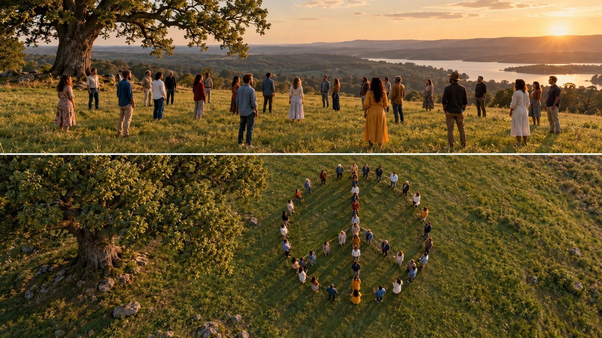

P03 · 초급 · 제작·활용
Look Up: 하늘에서 읽히는 평화 기호
사람의 배열이 기호로 읽히려면 필요한 시점과 프레임의 범위를 판단한다.
그림에서 확인할 세 가지시점을 바꾸면 배열의 의미가 드러난다.
1지상에서 보이는 사람
가상 초지의 낮은 시점에서는 개별 사람과 줄의 일부를 읽는다. 이 화면만 보고 전체 배열의 뜻을 알 수 있는지 먼저 판단한다.
2위에서 읽히는 배열
위에서 본 화면에서 사람들의 원형 배열과 안쪽 선을 찾는다. 바깥 원과 안쪽 형태가 구분되는지, 지면의 그림자가 형태를 방해하는지 본다.
3사람과 그림자의 구분
사람의 몸과 지면으로 뻗은 그림자를 구분해 본다. 높은 시점에서 몸보다 그림자가 선처럼 강하게 보이면 배열의 뜻이 어떻게 달라지는지 살핀다.
촬영 설계
촬영을 이렇게 설계한다
전달할 형태 먼저 정하기
교육 제안: 사람을 놓기 전에 최종 화면에서 읽힐 기호를 평면으로 그린다. 가는 선이나 좁은 틈은 작은 화면에서 사라질 수 있으므로 핵심 윤곽을 먼저 단순하게 확인한다.
시점에 따른 형태 비교
교육 제안: 같은 배열을 눈높이와 위쪽 시점으로 비교한다. 비스듬한 시점에서는 선이 겹칠 수 있으므로 사람의 표정과 기호의 명확성 중 무엇을 우선할지 선택한다.
축소 화면으로 판정
교육 제안: 완성 프레임을 작은 화면 크기로 줄여 기호가 바로 읽히는지 본다. 형태가 불명확하면 단순히 더 높이 가기보다 배열 간격과 배경 대비를 바꾸는 대안을 검토한다.
Ringo Starr의 Look Up에서 출연자들이 초지에 평화 기호를 만든 장면이다.
원본 영상Look Up: 하늘에서 읽히는 평화 기호
1. 기호 인식
원본에서 사람들의 전체 배열이 보이는 구간을 찾는다. 설명 없이 형태를 알아볼 수 있는 순간과 아직 일부만 보이는 순간을 구분한다.
2. 배경 간섭
배열이 보이는 화면에서 사람과 지면의 색·그림자를 비교한다. 기호의 일부가 끊겨 보이거나 배경과 섞이는 곳이 있는지 관찰한다.
3. 원작의 공개 순서
원본 영상에서 사람을 먼저 보여주는지 기호를 먼저 보여주는지 확인한다. 순서에 따라 발견의 느낌이 어떻게 달라지는지 비교한다.
재생이 제한되면 원본 영상 새 창을 이용하세요.
제작진 설명 · 한국어 요약 번역
제작자가 설명한 선택
장비와 설정
원문 요약 번역: DLP Aerials는 링고 스타의 Look Up 뮤직비디오에 DJI Inspire 드론을 썼다고 소개한다.
굽이진 초원을 담은 넓은 설정 컷을 촬영했다.
평화 기호
수백 명의 출연자가 풍경 위에 큰 평화 기호를 만들었다.
전체 형태가 보이도록 위에서 촬영했다고 설명한다.
자평과 한계
제작사는 이를 깔끔하고 상징적인 항공 시퀀스라고 자평한다.
정확한 고도와 비행 방식은 공개되지 않았다.
Kling 프롬프트단문 인과 체인 · 16:9
내가 직접 만들어 본다
낮은 시점에서는 조각으로 보이던 사람들이 위로 올라가면 하나의 기호로 묶이는 인과를 지시한다.
- S01영상은 하나의 연속 쇼트다.
- S02초지에 많은 사람이 줄지어 서 있다.
- S03처음 10초 동안 드론은 눈높이에서 앞으로 나간다.
- S04낮은 시점에서는 줄의 일부만 보인다.
- S05그래서 전체 배열이 무엇인지 알 수 없다.
- S06다음 10초 동안 드론이 곧게 위로 솟아오른다.
- S07높아질수록 줄들이 서로 이어져 보인다.
- S08바깥쪽 사람들이 하나의 큰 원을 이룬다.
- S09안쪽 사람들은 원 안에 곧은 선과 갈라진 선을 만든다.
- S10마지막 10초 동안 드론은 정면 아래를 보며 멈춘다.
- S11위에서 보자 원과 선이 하나의 평화 기호로 읽힌다.
- S12사람들의 위치는 올라가는 동안 바뀌지 않는다.
[네거티브]
- 컷이 나뉘어 여러 쇼트로 끊기는 것 금지
- 사람들이 제멋대로 흩어져 줄이 없는 것 금지
- 처음부터 높이 떠서 전체가 보이는 것 금지
- 낮은 시점에서도 원 전체가 읽히는 것 금지
- 배열의 뜻이 처음부터 분명히 읽히는 것 금지
- 옆으로 기울며 비스듬히 올라가는 것 금지
- 높아져도 줄들이 따로 떨어져 보이는 것 금지
- 바깥 줄이 원이 아닌 네모로 보이는 것 금지
- 안쪽 선이 흐려져 원만 남는 것 금지
- 멈추지 않고 계속 올라가 사람이 점이 되는 것 금지
- 그림자가 선처럼 강해 형태가 헷갈리는 것 금지
- 올라가는 동안 사람들이 자리를 옮기는 것 금지
결과에서 볼 것
- 낮은 시점에서 전체 배열의 뜻을 알 수 없었는가
- 높이 오르자 바깥 원과 안쪽 선이 구분되었는가
- 위에서 본 화면이 하나의 기호로 바로 읽혔는가